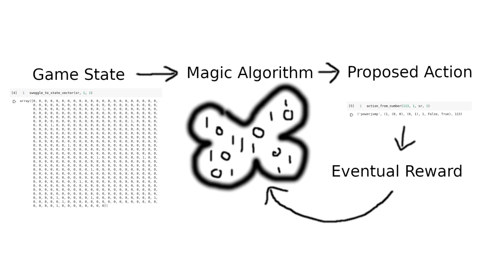
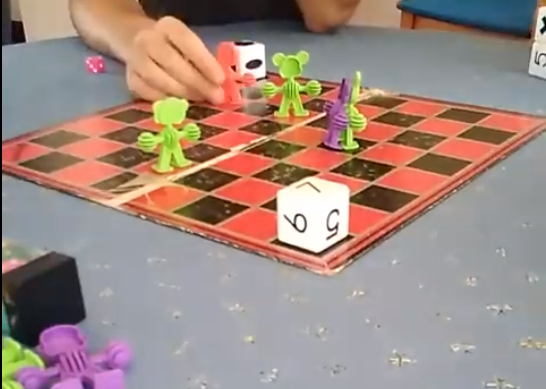
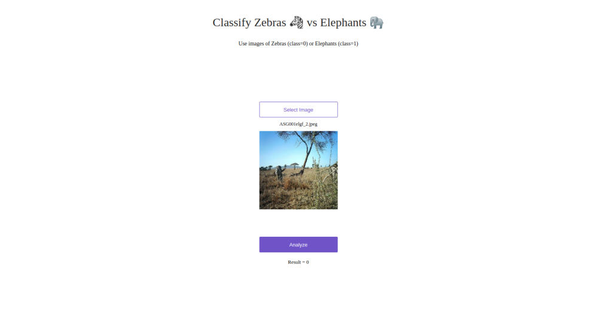
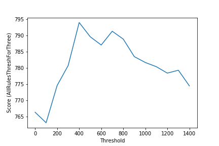

A feed of all the things :)
trying a trendy agent product to much disappointment
Clearing out my open tabs
exploring min-p sampling
Text-only LLMs are great, and we’ve seen people pasting on some image support here and there, but the future it seems is multi-modal. What does it take to train models from scratch that take in both images and text (and more)? In this video we look at two key papers from FAIR at Meta, introducing their Chameleon approach and making it more efficient with mixture of experts.
Creating a minimal template for charging users to run a custom AI pipeline.
Reviewing existing techniques, introducing coherence guidance and running through the GEN1 Paper from RunwayML.
This article explores an open re-implementation of OpenAI’s CLIP model for zero-shot classification and covers its additional uses and its potential issues.
Introducing a new method for diffusion model guidance with various advantages over existing methods, demonstrated by adding aesthetic guidance to Stable Diffusion.
Unit 1 runthrough for the HuggingFace Diffusion Model Class
Can you tell how wealthy a place is from space? It turns out that this is a very important question - an answer of ‘yes’ would mean that we can figure out how wealth is distributed within a country without needing to run expensive national surveys. For this project, I’ll be attempting to do exactly this, recreating some recent research to map poverty across Africa using existing household surveys and remote sensing data.
This article will dive into how the second version of WhistleGen works and explores how it enables you to generate folk music in ABC notation using minGPT.
In this article, we take a look at how to make pretty pictures (and videos!) using differentiable self-organizing systems.
In this article, we’ll look at Image Generation with CLOOB Conditioned Latent Denoising Diffusion Generative Adversarial Networks (GANs), or CCLDDG, for short.
Video run-through of Lesson 3 of the AIAIART course.
Video run-through of Lesson 2 of the AIAIART course.
Video for lesson 1 of the AIAIART course
A webgl slime mould simulation.
Sharing the first few weeks of my ‘days of code’ project




Whipped up a quick DIY multitouch thingee - really cool to play with and cost $0 (not bad considering Microsofts commercial alternative costs $12000!). Uses an open source program called CCV to process the video feed from my IR camera in the bottom of a box. The box is covered by a piece of perspex and a sheet of paper. By analysing the shadows on the paper the fingers can be detected. I also set a projector in the box so that you see the screen react as you touch it.
Found an easy and free way to take amazing macro shots with your cellphone using the lense from inside a DVD player. Pics and long explanation in ‘more details’ (warning, large ~2MB images)
After I managed to get my hands on an old laptop, I wanted to try my hand at making it into a “picture-frame” display, as seen all over the web. However, with the power of a (n admittadly derelict) laptop at your disposal it seems a bit of a waste if all you want is a slide-show. In addition, my mother didn’t look too happy with the idea of me liberating a frame from one of her pictures.
I threw together a Van de Graaff generator out of stuff lying around. It worked, but the whole point was that by doing everything wrong I can now explain how it should have been done. Check out the full article for the details.
How cool would it be to be able to scan objects in 3D? Turns out its not hard, and can be done with stuff you probably have lying around the house. I made mine using a cheap laser pointer, a broken wine glass stem (sorry mum :) and some cool software -makerscanner. This is a piece of software designed specifically for their design, but I will explain how to adapt it if you don’t have a 3D printer. I also usedMeshlabandBlenderto clean up the results.
When I found out this was possible I couldn’t resist having a go. Sadly, I didn’t document the build process but there are many tutorials out there already explaining all the details. A short explanation and some more pics in ‘more details’.